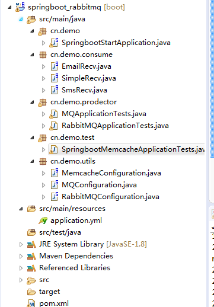

一、环境准备
memcached 1.4.5
SpringBoot 1.5.10.RELEASE
java_memcached-release_2.6.6.jar
memcached 1.4.5 windows 下载地址：http://www.runoob.com/memcached/window-install-memcached.html
danga memcached java client 下载地址：https://github.com/gwhalin/Memcached-Java-Client/downloads
pom依赖：
<dependency>
<groupId>commons-pool</groupId>
<artifactId>commons-pool</artifactId>
<version>1.5.6</version>
</dependency>
<dependency>
<groupId>com.danga</groupId>
<artifactId>java_memcached-release</artifactId>
<version>2.6.6</version>
<scope>system</scope>
<systemPath>${project.basedir}/src/main/webapp/WEB-INF/lib/java_memcached-release_2.6.6.jar</systemPath>
</dependency>
二、项目结构

三、代码详情
application.yml ：
spring:
datasource:
driver-class-name: com.mysql.jdbc.Driver
url: jdbc:mysql://192.168.1.20:3306/test?useSSL=false
username: root
password: root123
rabbitmq:
host: 192.168.1.123
port: 5672
username: admin
password: 1234
# virtual-host: /vhost_test
# publisher-confirms: true
## Memcache 配置 ##
memcache:
servers: 127.0.0.1:11211
failover: true
initConn: 100
minConn: 20
maxConn: 1000
maintSleep: 50
nagel: false
socketTO: 3000
aliveCheck: true
logging.level.com.demo.mapper: debug
MemcacheConfiguration.java
import com.danga.MemCached.MemCachedClient;
import com.danga.MemCached.SockIOPool;
import org.springframework.beans.factory.annotation.Value;
import org.springframework.context.annotation.Bean;
import org.springframework.context.annotation.Configuration;
/**
* @author zh
* @ClassName cn.saytime.config.config.MemcacheConfiguration
* @Description Memcache配置
*/
@Configuration
public class MemcacheConfiguration {
@Value("${memcache.servers}")
private String[] servers;
@Value("${memcache.failover}")
private boolean failover;
@Value("${memcache.initConn}")
private int initConn;
@Value("${memcache.minConn}")
private int minConn;
@Value("${memcache.maxConn}")
private int maxConn;
@Value("${memcache.maintSleep}")
private int maintSleep;
@Value("${memcache.nagel}")
private boolean nagel;
@Value("${memcache.socketTO}")
private int socketTO;
@Value("${memcache.aliveCheck}")
private boolean aliveCheck;
@Bean
public SockIOPool sockIOPool () {
SockIOPool pool = SockIOPool.getInstance();
pool.setServers(servers);
pool.setFailover(failover);
pool.setInitConn(initConn);
pool.setMinConn(minConn);
pool.setMaxConn(maxConn);
pool.setMaintSleep(maintSleep);
pool.setNagle(nagel);
pool.setSocketTO(socketTO);
pool.setAliveCheck(aliveCheck);
pool.initialize();
return pool;
}
@Bean
public MemCachedClient memCachedClient(){
return new MemCachedClient();
}
}
测试类 SpringbootMemcacheApplicationTests.java
import com.danga.MemCached.MemCachedClient;
import org.junit.Test;
import org.junit.runner.RunWith;
import org.springframework.beans.factory.annotation.Autowired;
import org.springframework.boot.test.context.SpringBootTest;
import org.springframework.test.context.junit4.SpringRunner;
import java.util.Date;
@RunWith(SpringRunner.class)
@SpringBootTest
public class SpringbootMemcacheApplicationTests {
@Autowired
private MemCachedClient memCachedClient;
@Test
public void contextLoads() throws InterruptedException {
// 放入缓存
boolean flag = memCachedClient.set("a", 1);
// 取出缓存
Object a = memCachedClient.get("a");
System.out.println(a);
// 3s后过期
memCachedClient.set("b", "2", new Date(3000));
Object b = memCachedClient.get("b");
System.out.println(b);
Thread.sleep(3000);
b = memCachedClient.get("b");
System.out.println(b);
}
}
先运行memcached，然后执行test，输出结果为：
1
2
null
测试memcached存取以及失效时间成功。
四、部分操作方法
set与add在key不存在时效果一致，add在key存在时不会成功。
set与replace在key存在时效果一致，replace在key不存在不会成功。
五、注意点
使用danga memcached设置失效时间有两种方式：
第一种
memCachedClient.set("xx", "xx", new Date(3000));
第二种
memCachedClient.set("xx", "xx", new Date(System.currentTimeMillis() + 3 * 1000));
对比两种形式，第一种是指定key在3s后过期，第二种是指定key在xxxx-xx-xx xx:xx:xx 时间点失效，如果服务器时间跟客户端时间不一致，就会跟想要的结果不一样，比如客户端现在时间点为2018-01-01 00:00:00，服务端时间为2018-01-01 00:00:10，服务端时间快10s，那么如果客户端使用第二种方式设置30s后失效，也就是2018-01-01 00:00:30失效，实际上客户端想要的是30s后失效，而服务端20s就将key失效了。
从上可以发现，最好是使用第一种形式，但是第一种形式在某些时间也会存在问题，比如如果设定的时间小于1s，会发现key会永久保存，不会在指定时间失效，原因可以通过源码得到。
说明当时间小于1s的时候，使用第一种方式会造成指定时间不生效，key永久存在，这种时间如果客户端服务端时间没有误差的时候，使用第二种形式。
关于memcached最大设置30天有效的情形暂时没有测试。